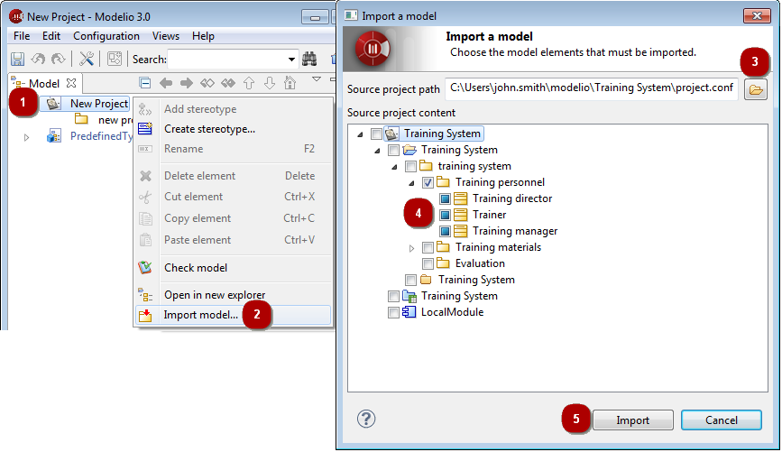

The element import feature is used to import elements from other projects into your current project.

Elements that can be imported into your project are presented in a standard hierarchy (packages containing classes). To view the classes contained in an importable package, simply click on the “+” on the left of the package name.
The following list describes exactly what is imported for each type of element.
Project : The entire project (packages, classes, …)
Package : Classes (with their operations, attributes, “visible” associations), documents, tagged values, diagrams
Class : Operations, attributes, “visible” associations, documents, tagged values, diagrams
Non-imported objects are:
Reference links from a package to another element that is not imported and that does not already exist in the current project
Non-oriented associations (no visibility on either side)
The import will fail if there is any inconsistency between imported elements.